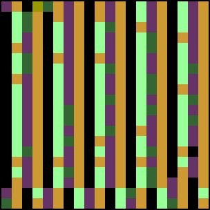
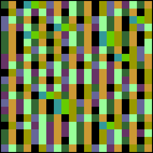

|
|  |
 |
s = 1.2. Here the iterates of the tent map hop between two ranges of
values, yet within these ranges the map is chaotic. We see structure superimposed on a
disordered array of colors. |
s = 1.32. Still two bands, but they are wider and the chaos within is more
fully expressed. |
|